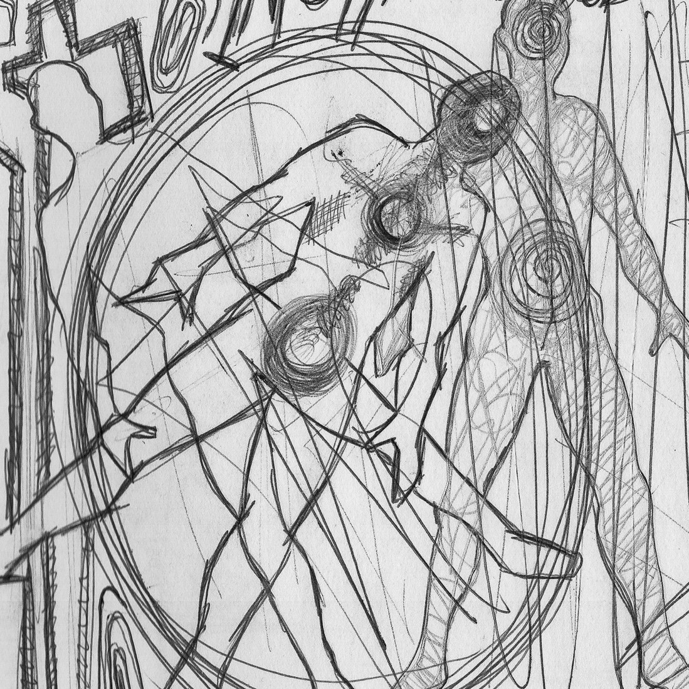
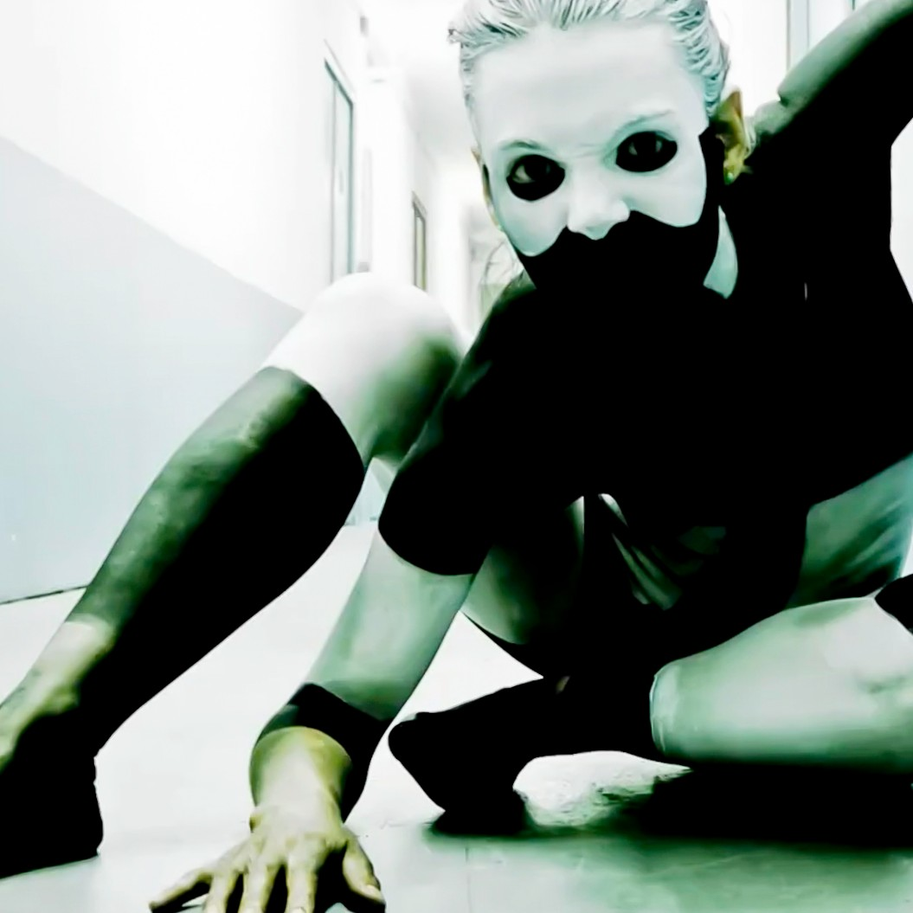
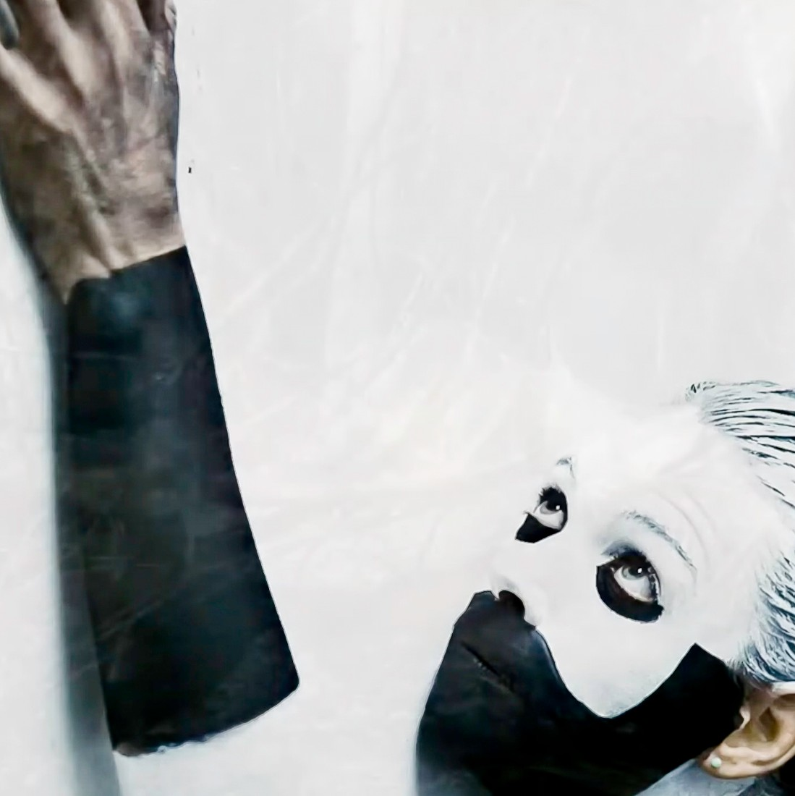
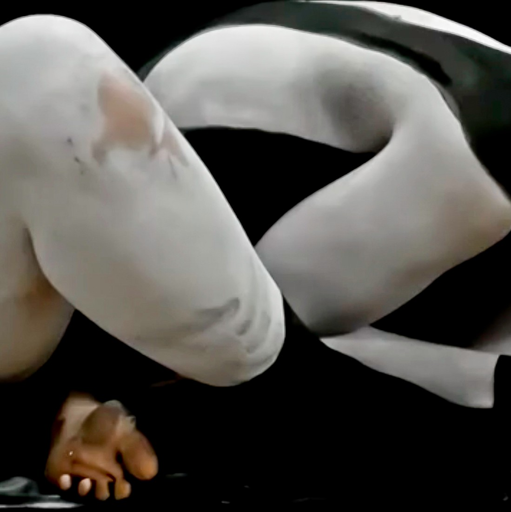
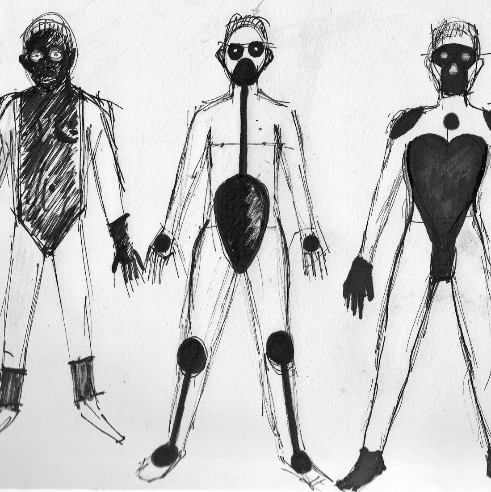
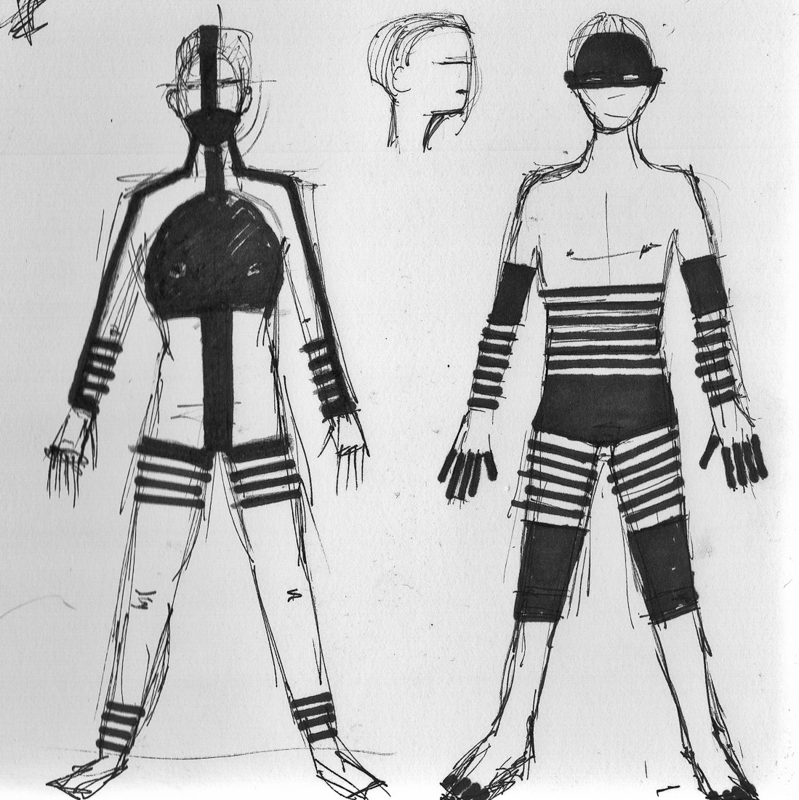
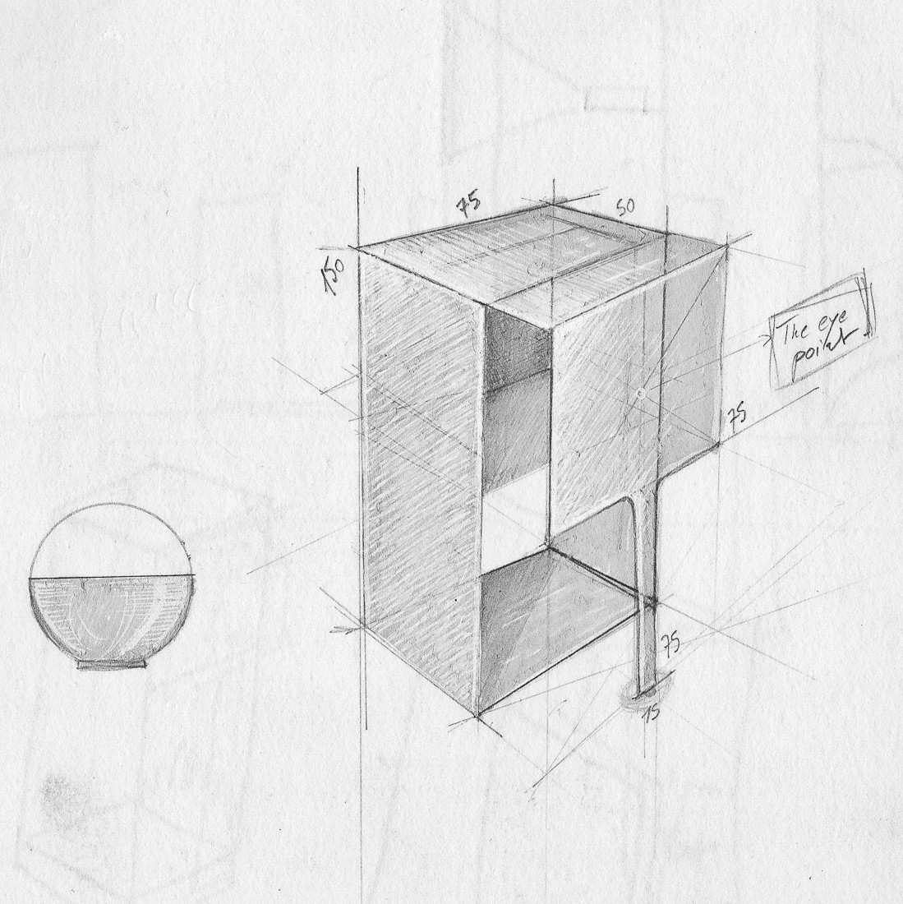
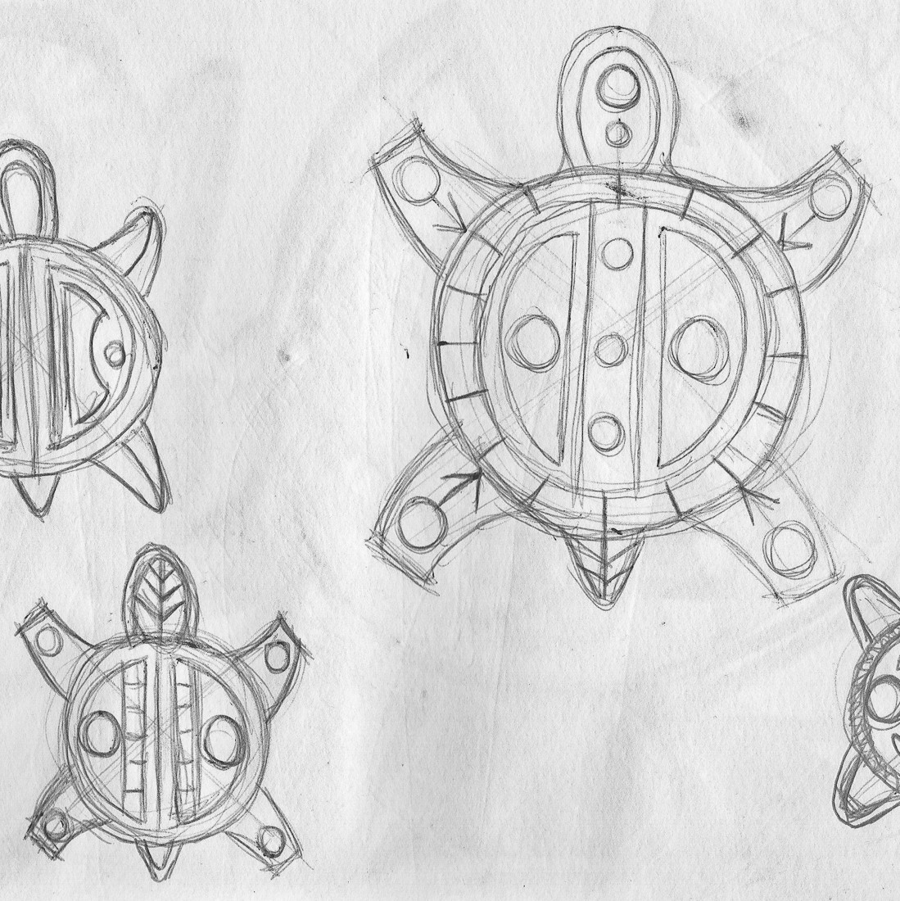
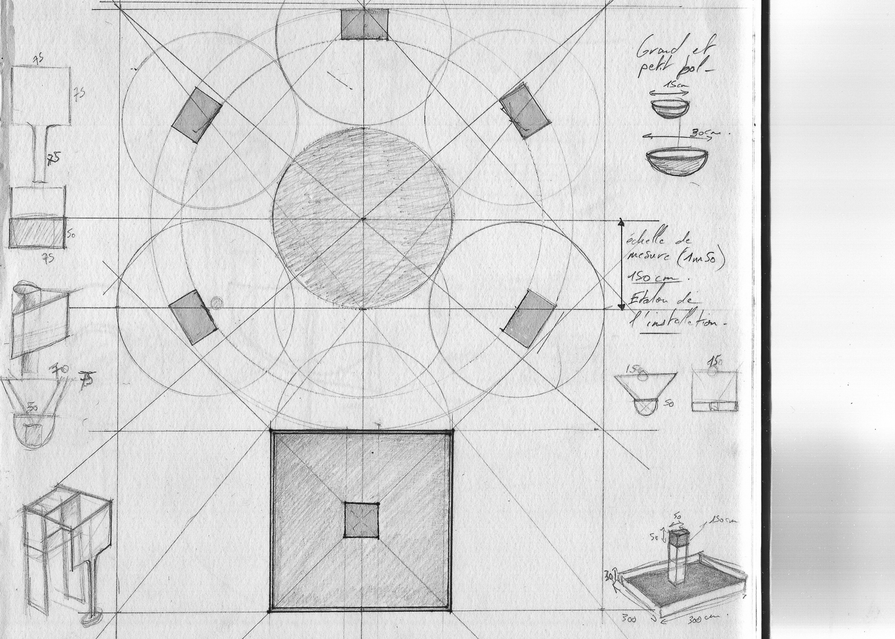

Arawak6.0 part de l’idée d’un corps paré pour être vu par les dieux. Ce corps n’y est ni décoré ni exhibé. Il est préparé. La peinture agit comme une opération de déplacement : elle retire le visage à l’expression, fragmente la silhouette et impose une autre économie de la présence.
Le noir et le blanc ne relèvent pas du registre ornemental. Ils construisent une surface, un rythme, une tension. Le corps devient support, seuil, adresse. Non plus corps social ni corps disponible, mais corps mis en condition pour une visibilité autre. Une forme de pudeur s’y affirme : non pas retrait faible, mais retenue, mise à distance, refus de la captation immédiate.
Le projet ne reconstitue aucun rite. Il travaille à distance, à partir d’une mémoire du corps peint déplacée dans un langage contemporain. Il s’inscrit dans une recherche sur les formes de parure du corps, envisagées comme des dispositifs de transformation, de retenue et d’adresse. Ce qui s’y cherche est moins une image qu’un état : celui d’un corps soustrait au regard commun, préparé pour une autre instance.




